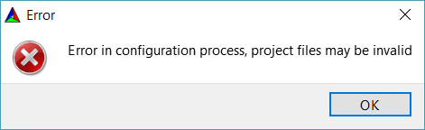

rahulsanjay18
I haven’t even started using the engine because when I use the Generate button with Cmake, I get this error:

When looking at the log file, I see this:
Determining if the function __sincosf exists failed with the following output:
Change Dir: C:/Users/rahul/Videos/Urho3D_Build/CMakeFiles/CMakeTmp
Run Build Command:"C:/Program Files (x86)/Microsoft Visual Studio/2017/Community/MSBuild/15.0/Bin/MSBuild.exe" "cmTC_63912.vcxproj" "/p:Configuration=Debug" "/p:VisualStudioVersion=15.0"
Microsoft (R) Build Engine version 15.3.409.57025 for .NET Framework
Copyright (C) Microsoft Corporation. All rights reserved.
Build started 3/26/2018 12:06:23 PM.
Project "C:\Users\rahul\Videos\Urho3D_Build\CMakeFiles\CMakeTmp\cmTC_63912.vcxproj" on node 1 (default targets).
PrepareForBuild:
Creating directory "cmTC_63912.dir\Debug\".
Creating directory "C:\Users\rahul\Videos\Urho3D_Build\CMakeFiles\CMakeTmp\Debug\".
Creating directory "cmTC_63912.dir\Debug\cmTC_63912.tlog\".
InitializeBuildStatus:
Creating "cmTC_63912.dir\Debug\cmTC_63912.tlog\unsuccessfulbuild" because "AlwaysCreate" was specified.
ClCompile:
C:\Program Files (x86)\Microsoft Visual Studio\2017\Community\VC\Tools\MSVC\14.11.25503\bin\HostX86\x86\CL.exe /c /Zi /W3 /WX- /diagnostics:classic /MP /Od /Ob0 /Oy- /D WIN32 /D _WINDOWS /D CHECK_FUNCTION_EXISTS=__sincosf /D "CMAKE_INTDIR=\"Debug\"" /D _MBCS /Gm- /RTC1 /MDd /GS /fp:precise /Zc:wchar_t /Zc:forScope /Zc:inline /Fo"cmTC_63912.dir\Debug\\" /Fd"cmTC_63912.dir\Debug\vc141.pdb" /Gd /TC /analyze- /errorReport:queue "C:\Program Files\CMake\share\cmake-3.11\Modules\CheckFunctionExists.c"
Microsoft (R) C/C++ Optimizing Compiler Version 19.11.25507.1 for x86
Copyright (C) Microsoft Corporation. All rights reserved.
cl /c /Zi /W3 /WX- /diagnostics:classic /MP /Od /Ob0 /Oy- /D WIN32 /D _WINDOWS /D CHECK_FUNCTION_EXISTS=__sincosf /D "CMAKE_INTDIR=\"Debug\"" /D _MBCS /Gm- /RTC1 /MDd /GS /fp:precise /Zc:wchar_t /Zc:forScope /Zc:inline /Fo"cmTC_63912.dir\Debug\\" /Fd"cmTC_63912.dir\Debug\vc141.pdb" /Gd /TC /analyze- /errorReport:queue "C:\Program Files\CMake\share\cmake-3.11\Modules\CheckFunctionExists.c"
CheckFunctionExists.c
Link:
C:\Program Files (x86)\Microsoft Visual Studio\2017\Community\VC\Tools\MSVC\14.11.25503\bin\HostX86\x86\link.exe /ERRORREPORT:QUEUE /OUT:"C:\Users\rahul\Videos\Urho3D_Build\CMakeFiles\CMakeTmp\Debug\cmTC_63912.exe" /INCREMENTAL /NOLOGO kernel32.lib user32.lib gdi32.lib winspool.lib shell32.lib ole32.lib oleaut32.lib uuid.lib comdlg32.lib advapi32.lib /MANIFEST /MANIFESTUAC:"level='asInvoker' uiAccess='false'" /manifest:embed /DEBUG /PDB:"C:/Users/rahul/Videos/Urho3D_Build/CMakeFiles/CMakeTmp/Debug/cmTC_63912.pdb" /SUBSYSTEM:CONSOLE /TLBID:1 /DYNAMICBASE /NXCOMPAT /IMPLIB:"C:/Users/rahul/Videos/Urho3D_Build/CMakeFiles/CMakeTmp/Debug/cmTC_63912.lib" /MACHINE:X86 /SAFESEH /machine:X86 cmTC_63912.dir\Debug\CheckFunctionExists.obj
CheckFunctionExists.obj : error LNK2019: unresolved external symbol ___sincosf referenced in function _main [C:\Users\rahul\Videos\Urho3D_Build\CMakeFiles\CMakeTmp\cmTC_63912.vcxproj]
C:\Users\rahul\Videos\Urho3D_Build\CMakeFiles\CMakeTmp\Debug\cmTC_63912.exe : fatal error LNK1120: 1 unresolved externals [C:\Users\rahul\Videos\Urho3D_Build\CMakeFiles\CMakeTmp\cmTC_63912.vcxproj]
Done Building Project "C:\Users\rahul\Videos\Urho3D_Build\CMakeFiles\CMakeTmp\cmTC_63912.vcxproj" (default targets) -- FAILED.
Build FAILED.
"C:\Users\rahul\Videos\Urho3D_Build\CMakeFiles\CMakeTmp\cmTC_63912.vcxproj" (default target) (1) ->
(Link target) ->
CheckFunctionExists.obj : error LNK2019: unresolved external symbol ___sincosf referenced in function _main [C:\Users\rahul\Videos\Urho3D_Build\CMakeFiles\CMakeTmp\cmTC_63912.vcxproj]
C:\Users\rahul\Videos\Urho3D_Build\CMakeFiles\CMakeTmp\Debug\cmTC_63912.exe : fatal error LNK1120: 1 unresolved externals [C:\Users\rahul\Videos\Urho3D_Build\CMakeFiles\CMakeTmp\cmTC_63912.vcxproj]
0 Warning(s)
2 Error(s)
Time Elapsed 00:00:02.21
Determining if the function malloc_usable_size exists failed with the following output:
Change Dir: C:/Users/rahul/Videos/Urho3D_Build/CMakeFiles/CMakeTmp
Run Build Command:"C:/Program Files (x86)/Microsoft Visual Studio/2017/Community/MSBuild/15.0/Bin/MSBuild.exe" "cmTC_8c72c.vcxproj" "/p:Configuration=Debug" "/p:VisualStudioVersion=15.0"
Microsoft (R) Build Engine version 15.3.409.57025 for .NET Framework
Copyright (C) Microsoft Corporation. All rights reserved.
Build started 3/26/2018 12:06:26 PM.
Project "C:\Users\rahul\Videos\Urho3D_Build\CMakeFiles\CMakeTmp\cmTC_8c72c.vcxproj" on node 1 (default targets).
PrepareForBuild:
Creating directory "cmTC_8c72c.dir\Debug\".
Creating directory "C:\Users\rahul\Videos\Urho3D_Build\CMakeFiles\CMakeTmp\Debug\".
Creating directory "cmTC_8c72c.dir\Debug\cmTC_8c72c.tlog\".
InitializeBuildStatus:
Creating "cmTC_8c72c.dir\Debug\cmTC_8c72c.tlog\unsuccessfulbuild" because "AlwaysCreate" was specified.
ClCompile:
C:\Program Files (x86)\Microsoft Visual Studio\2017\Community\VC\Tools\MSVC\14.11.25503\bin\HostX86\x86\CL.exe /c /Zi /W3 /WX- /diagnostics:classic /MP /Od /Ob0 /Oy- /D WIN32 /D _WINDOWS /D CHECK_FUNCTION_EXISTS=malloc_usable_size /D "CMAKE_INTDIR=\"Debug\"" /D _MBCS /Gm- /RTC1 /MDd /GS /fp:precise /Zc:wchar_t /Zc:forScope /Zc:inline /Fo"cmTC_8c72c.dir\Debug\\" /Fd"cmTC_8c72c.dir\Debug\vc141.pdb" /Gd /TC /analyze- /errorReport:queue "C:\Program Files\CMake\share\cmake-3.11\Modules\CheckFunctionExists.c"
Microsoft (R) C/C++ Optimizing Compiler Version 19.11.25507.1 for x86
Copyright (C) Microsoft Corporation. All rights reserved.
cl /c /Zi /W3 /WX- /diagnostics:classic /MP /Od /Ob0 /Oy- /D WIN32 /D _WINDOWS /D CHECK_FUNCTION_EXISTS=malloc_usable_size /D "CMAKE_INTDIR=\"Debug\"" /D _MBCS /Gm- /RTC1 /MDd /GS /fp:precise /Zc:wchar_t /Zc:forScope /Zc:inline /Fo"cmTC_8c72c.dir\Debug\\" /Fd"cmTC_8c72c.dir\Debug\vc141.pdb" /Gd /TC /analyze- /errorReport:queue "C:\Program Files\CMake\share\cmake-3.11\Modules\CheckFunctionExists.c"
CheckFunctionExists.c
Link:
C:\Program Files (x86)\Microsoft Visual Studio\2017\Community\VC\Tools\MSVC\14.11.25503\bin\HostX86\x86\link.exe /ERRORREPORT:QUEUE /OUT:"C:\Users\rahul\Videos\Urho3D_Build\CMakeFiles\CMakeTmp\Debug\cmTC_8c72c.exe" /INCREMENTAL /NOLOGO kernel32.lib user32.lib gdi32.lib winspool.lib shell32.lib ole32.lib oleaut32.lib uuid.lib comdlg32.lib advapi32.lib /MANIFEST /MANIFESTUAC:"level='asInvoker' uiAccess='false'" /manifest:embed /DEBUG /PDB:"C:/Users/rahul/Videos/Urho3D_Build/CMakeFiles/CMakeTmp/Debug/cmTC_8c72c.pdb" /SUBSYSTEM:CONSOLE /TLBID:1 /DYNAMICBASE /NXCOMPAT /IMPLIB:"C:/Users/rahul/Videos/Urho3D_Build/CMakeFiles/CMakeTmp/Debug/cmTC_8c72c.lib" /MACHINE:X86 /SAFESEH /machine:X86 cmTC_8c72c.dir\Debug\CheckFunctionExists.obj
CheckFunctionExists.obj : error LNK2019: unresolved external symbol _malloc_usable_size referenced in function _main [C:\Users\rahul\Videos\Urho3D_Build\CMakeFiles\CMakeTmp\cmTC_8c72c.vcxproj]
C:\Users\rahul\Videos\Urho3D_Build\CMakeFiles\CMakeTmp\Debug\cmTC_8c72c.exe : fatal error LNK1120: 1 unresolved externals [C:\Users\rahul\Videos\Urho3D_Build\CMakeFiles\CMakeTmp\cmTC_8c72c.vcxproj]
Done Building Project "C:\Users\rahul\Videos\Urho3D_Build\CMakeFiles\CMakeTmp\cmTC_8c72c.vcxproj" (default targets) -- FAILED.
Build FAILED.
"C:\Users\rahul\Videos\Urho3D_Build\CMakeFiles\CMakeTmp\cmTC_8c72c.vcxproj" (default target) (1) ->
(Link target) ->
CheckFunctionExists.obj : error LNK2019: unresolved external symbol _malloc_usable_size referenced in function _main [C:\Users\rahul\Videos\Urho3D_Build\CMakeFiles\CMakeTmp\cmTC_8c72c.vcxproj]
C:\Users\rahul\Videos\Urho3D_Build\CMakeFiles\CMakeTmp\Debug\cmTC_8c72c.exe : fatal error LNK1120: 1 unresolved externals [C:\Users\rahul\Videos\Urho3D_Build\CMakeFiles\CMakeTmp\cmTC_8c72c.vcxproj]
0 Warning(s)
2 Error(s)
Time Elapsed 00:00:02.06
Determining if the function sincosf exists in the m failed with the following output:
Change Dir: C:/Users/rahul/Videos/Urho3D_Build/CMakeFiles/CMakeTmp
Run Build Command:"C:/Program Files (x86)/Microsoft Visual Studio/2017/Community/MSBuild/15.0/Bin/MSBuild.exe" "cmTC_3954b.vcxproj" "/p:Configuration=Debug" "/p:VisualStudioVersion=15.0"
Microsoft (R) Build Engine version 15.3.409.57025 for .NET Framework
Copyright (C) Microsoft Corporation. All rights reserved.
Build started 3/26/2018 12:06:29 PM.
Project "C:\Users\rahul\Videos\Urho3D_Build\CMakeFiles\CMakeTmp\cmTC_3954b.vcxproj" on node 1 (default targets).
PrepareForBuild:
Creating directory "cmTC_3954b.dir\Debug\".
Creating directory "C:\Users\rahul\Videos\Urho3D_Build\CMakeFiles\CMakeTmp\Debug\".
Creating directory "cmTC_3954b.dir\Debug\cmTC_3954b.tlog\".
InitializeBuildStatus:
Creating "cmTC_3954b.dir\Debug\cmTC_3954b.tlog\unsuccessfulbuild" because "AlwaysCreate" was specified.
ClCompile:
C:\Program Files (x86)\Microsoft Visual Studio\2017\Community\VC\Tools\MSVC\14.11.25503\bin\HostX86\x86\CL.exe /c /Zi /W3 /WX- /diagnostics:classic /MP /Od /Ob0 /Oy- /D WIN32 /D _WINDOWS /D CHECK_FUNCTION_EXISTS=sincosf /D "CMAKE_INTDIR=\"Debug\"" /D _MBCS /Gm- /RTC1 /MDd /GS /fp:precise /Zc:wchar_t /Zc:forScope /Zc:inline /Fo"cmTC_3954b.dir\Debug\\" /Fd"cmTC_3954b.dir\Debug\vc141.pdb" /Gd /TC /analyze- /errorReport:queue "C:\Program Files\CMake\share\cmake-3.11\Modules\CheckFunctionExists.c"
Microsoft (R) C/C++ Optimizing Compiler Version 19.11.25507.1 for x86
Copyright (C) Microsoft Corporation. All rights reserved.
cl /c /Zi /W3 /WX- /diagnostics:classic /MP /Od /Ob0 /Oy- /D WIN32 /D _WINDOWS /D CHECK_FUNCTION_EXISTS=sincosf /D "CMAKE_INTDIR=\"Debug\"" /D _MBCS /Gm- /RTC1 /MDd /GS /fp:precise /Zc:wchar_t /Zc:forScope /Zc:inline /Fo"cmTC_3954b.dir\Debug\\" /Fd"cmTC_3954b.dir\Debug\vc141.pdb" /Gd /TC /analyze- /errorReport:queue "C:\Program Files\CMake\share\cmake-3.11\Modules\CheckFunctionExists.c"
CheckFunctionExists.c
Link:
C:\Program Files (x86)\Microsoft Visual Studio\2017\Community\VC\Tools\MSVC\14.11.25503\bin\HostX86\x86\link.exe /ERRORREPORT:QUEUE /OUT:"C:\Users\rahul\Videos\Urho3D_Build\CMakeFiles\CMakeTmp\Debug\cmTC_3954b.exe" /INCREMENTAL /NOLOGO m.lib kernel32.lib user32.lib gdi32.lib winspool.lib shell32.lib ole32.lib oleaut32.lib uuid.lib comdlg32.lib advapi32.lib /MANIFEST /MANIFESTUAC:"level='asInvoker' uiAccess='false'" /manifest:embed /DEBUG /PDB:"C:/Users/rahul/Videos/Urho3D_Build/CMakeFiles/CMakeTmp/Debug/cmTC_3954b.pdb" /SUBSYSTEM:CONSOLE /TLBID:1 /DYNAMICBASE /NXCOMPAT /IMPLIB:"C:/Users/rahul/Videos/Urho3D_Build/CMakeFiles/CMakeTmp/Debug/cmTC_3954b.lib" /MACHINE:X86 /SAFESEH /machine:X86 cmTC_3954b.dir\Debug\CheckFunctionExists.obj
LINK : fatal error LNK1104: cannot open file 'm.lib' [C:\Users\rahul\Videos\Urho3D_Build\CMakeFiles\CMakeTmp\cmTC_3954b.vcxproj]
Done Building Project "C:\Users\rahul\Videos\Urho3D_Build\CMakeFiles\CMakeTmp\cmTC_3954b.vcxproj" (default targets) -- FAILED.
Build FAILED.
"C:\Users\rahul\Videos\Urho3D_Build\CMakeFiles\CMakeTmp\cmTC_3954b.vcxproj" (default target) (1) ->
(Link target) ->
LINK : fatal error LNK1104: cannot open file 'm.lib' [C:\Users\rahul\Videos\Urho3D_Build\CMakeFiles\CMakeTmp\cmTC_3954b.vcxproj]
0 Warning(s)
1 Error(s)
Time Elapsed 00:00:01.38
Performing C SOURCE FILE Test HAVE_XINPUT_GAMEPAD_EX failed with the following output:
Change Dir: C:/Users/rahul/Videos/Urho3D_Build/CMakeFiles/CMakeTmp
Run Build Command:"C:/Program Files (x86)/Microsoft Visual Studio/2017/Community/MSBuild/15.0/Bin/MSBuild.exe" "cmTC_43949.vcxproj" "/p:Configuration=Debug" "/p:VisualStudioVersion=15.0"
Microsoft (R) Build Engine version 15.3.409.57025 for .NET Framework
Copyright (C) Microsoft Corporation. All rights reserved.
Build started 3/26/2018 12:06:37 PM.
Project "C:\Users\rahul\Videos\Urho3D_Build\CMakeFiles\CMakeTmp\cmTC_43949.vcxproj" on node 1 (default targets).
PrepareForBuild:
Creating directory "cmTC_43949.dir\Debug\".
Creating directory "C:\Users\rahul\Videos\Urho3D_Build\CMakeFiles\CMakeTmp\Debug\".
Creating directory "cmTC_43949.dir\Debug\cmTC_43949.tlog\".
InitializeBuildStatus:
Creating "cmTC_43949.dir\Debug\cmTC_43949.tlog\unsuccessfulbuild" because "AlwaysCreate" was specified.
ClCompile:
C:\Program Files (x86)\Microsoft Visual Studio\2017\Community\VC\Tools\MSVC\14.11.25503\bin\HostX86\x86\CL.exe /c /Zi /W3 /WX- /diagnostics:classic /MP /Od /Ob0 /Oy- /D WIN32 /D _WINDOWS /D HAVE_XINPUT_GAMEPAD_EX /D "CMAKE_INTDIR=\"Debug\"" /D _MBCS /Gm- /RTC1 /MDd /GS /fp:precise /Zc:wchar_t /Zc:forScope /Zc:inline /Fo"cmTC_43949.dir\Debug\\" /Fd"cmTC_43949.dir\Debug\vc141.pdb" /Gd /TC /analyze- /errorReport:queue C:\Users\rahul\Videos\Urho3D_Build\CMakeFiles\CMakeTmp\src.c
Microsoft (R) C/C++ Optimizing Compiler Version 19.11.25507.1 for x86
Copyright (C) Microsoft Corporation. All rights reserved.
cl /c /Zi /W3 /WX- /diagnostics:classic /MP /Od /Ob0 /Oy- /D WIN32 /D _WINDOWS /D HAVE_XINPUT_GAMEPAD_EX /D "CMAKE_INTDIR=\"Debug\"" /D _MBCS /Gm- /RTC1 /MDd /GS /fp:precise /Zc:wchar_t /Zc:forScope /Zc:inline /Fo"cmTC_43949.dir\Debug\\" /Fd"cmTC_43949.dir\Debug\vc141.pdb" /Gd /TC /analyze- /errorReport:queue C:\Users\rahul\Videos\Urho3D_Build\CMakeFiles\CMakeTmp\src.c
src.c
C:\Program Files (x86)\Windows Kits\10\Include\10.0.15063.0\um\winnt.h(154): fatal error C1189: #error: "No Target Architecture" [C:\Users\rahul\Videos\Urho3D_Build\CMakeFiles\CMakeTmp\cmTC_43949.vcxproj]
Done Building Project "C:\Users\rahul\Videos\Urho3D_Build\CMakeFiles\CMakeTmp\cmTC_43949.vcxproj" (default targets) -- FAILED.
Build FAILED.
"C:\Users\rahul\Videos\Urho3D_Build\CMakeFiles\CMakeTmp\cmTC_43949.vcxproj" (default target) (1) ->
(ClCompile target) ->
C:\Program Files (x86)\Windows Kits\10\Include\10.0.15063.0\um\winnt.h(154): fatal error C1189: #error: "No Target Architecture" [C:\Users\rahul\Videos\Urho3D_Build\CMakeFiles\CMakeTmp\cmTC_43949.vcxproj]
0 Warning(s)
1 Error(s)
Time Elapsed 00:00:01.08
Source file was:
#include <xinput.h>
int main()
{
(void)sizeof(((XINPUT_GAMEPAD_EX *)0)->wButtons);
return 0;
}
Performing C SOURCE FILE Test HAVE_XINPUT_STATE_EX failed with the following output:
Change Dir: C:/Users/rahul/Videos/Urho3D_Build/CMakeFiles/CMakeTmp
Run Build Command:"C:/Program Files (x86)/Microsoft Visual Studio/2017/Community/MSBuild/15.0/Bin/MSBuild.exe" "cmTC_658a8.vcxproj" "/p:Configuration=Debug" "/p:VisualStudioVersion=15.0"
Microsoft (R) Build Engine version 15.3.409.57025 for .NET Framework
Copyright (C) Microsoft Corporation. All rights reserved.
Build started 3/26/2018 12:06:39 PM.
Project "C:\Users\rahul\Videos\Urho3D_Build\CMakeFiles\CMakeTmp\cmTC_658a8.vcxproj" on node 1 (default targets).
PrepareForBuild:
Creating directory "cmTC_658a8.dir\Debug\".
Creating directory "C:\Users\rahul\Videos\Urho3D_Build\CMakeFiles\CMakeTmp\Debug\".
Creating directory "cmTC_658a8.dir\Debug\cmTC_658a8.tlog\".
InitializeBuildStatus:
Creating "cmTC_658a8.dir\Debug\cmTC_658a8.tlog\unsuccessfulbuild" because "AlwaysCreate" was specified.
ClCompile:
C:\Program Files (x86)\Microsoft Visual Studio\2017\Community\VC\Tools\MSVC\14.11.25503\bin\HostX86\x86\CL.exe /c /Zi /W3 /WX- /diagnostics:classic /MP /Od /Ob0 /Oy- /D WIN32 /D _WINDOWS /D HAVE_XINPUT_STATE_EX /D "CMAKE_INTDIR=\"Debug\"" /D _MBCS /Gm- /RTC1 /MDd /GS /fp:precise /Zc:wchar_t /Zc:forScope /Zc:inline /Fo"cmTC_658a8.dir\Debug\\" /Fd"cmTC_658a8.dir\Debug\vc141.pdb" /Gd /TC /analyze- /errorReport:queue C:\Users\rahul\Videos\Urho3D_Build\CMakeFiles\CMakeTmp\src.c
Microsoft (R) C/C++ Optimizing Compiler Version 19.11.25507.1 for x86
Copyright (C) Microsoft Corporation. All rights reserved.
cl /c /Zi /W3 /WX- /diagnostics:classic /MP /Od /Ob0 /Oy- /D WIN32 /D _WINDOWS /D HAVE_XINPUT_STATE_EX /D "CMAKE_INTDIR=\"Debug\"" /D _MBCS /Gm- /RTC1 /MDd /GS /fp:precise /Zc:wchar_t /Zc:forScope /Zc:inline /Fo"cmTC_658a8.dir\Debug\\" /Fd"cmTC_658a8.dir\Debug\vc141.pdb" /Gd /TC /analyze- /errorReport:queue C:\Users\rahul\Videos\Urho3D_Build\CMakeFiles\CMakeTmp\src.c
src.c
C:\Program Files (x86)\Windows Kits\10\Include\10.0.15063.0\um\winnt.h(154): fatal error C1189: #error: "No Target Architecture" [C:\Users\rahul\Videos\Urho3D_Build\CMakeFiles\CMakeTmp\cmTC_658a8.vcxproj]
Done Building Project "C:\Users\rahul\Videos\Urho3D_Build\CMakeFiles\CMakeTmp\cmTC_658a8.vcxproj" (default targets) -- FAILED.
Build FAILED.
"C:\Users\rahul\Videos\Urho3D_Build\CMakeFiles\CMakeTmp\cmTC_658a8.vcxproj" (default target) (1) ->
(ClCompile target) ->
C:\Program Files (x86)\Windows Kits\10\Include\10.0.15063.0\um\winnt.h(154): fatal error C1189: #error: "No Target Architecture" [C:\Users\rahul\Videos\Urho3D_Build\CMakeFiles\CMakeTmp\cmTC_658a8.vcxproj]
0 Warning(s)
1 Error(s)
Time Elapsed 00:00:01.08
Source file was:
#include <xinput.h>
int main()
{
(void)sizeof(((XINPUT_STATE_EX *)0)->dwPacketNumber);
return 0;
}
Determining if the _TIMESPEC_DEFINED exist failed with the following output:
Change Dir: C:/Users/rahul/Videos/Urho3D_Build/CMakeFiles/CMakeTmp
Run Build Command:"C:/Program Files (x86)/Microsoft Visual Studio/2017/Community/MSBuild/15.0/Bin/MSBuild.exe" "cmTC_16f75.vcxproj" "/p:Configuration=Debug" "/p:VisualStudioVersion=15.0"
Microsoft (R) Build Engine version 15.3.409.57025 for .NET Framework
Copyright (C) Microsoft Corporation. All rights reserved.
Build started 3/26/2018 12:06:50 PM.
Project "C:\Users\rahul\Videos\Urho3D_Build\CMakeFiles\CMakeTmp\cmTC_16f75.vcxproj" on node 1 (default targets).
PrepareForBuild:
Creating directory "cmTC_16f75.dir\Debug\".
Creating directory "C:\Users\rahul\Videos\Urho3D_Build\CMakeFiles\CMakeTmp\Debug\".
Creating directory "cmTC_16f75.dir\Debug\cmTC_16f75.tlog\".
InitializeBuildStatus:
Creating "cmTC_16f75.dir\Debug\cmTC_16f75.tlog\unsuccessfulbuild" because "AlwaysCreate" was specified.
ClCompile:
C:\Program Files (x86)\Microsoft Visual Studio\2017\Community\VC\Tools\MSVC\14.11.25503\bin\HostX86\x86\CL.exe /c /Zi /W3 /WX- /diagnostics:classic /MP /Od /Ob0 /Oy- /D WIN32 /D _WINDOWS /D "CMAKE_INTDIR=\"Debug\"" /D _MBCS /Gm- /RTC1 /MDd /GS /fp:precise /Zc:wchar_t /Zc:forScope /Zc:inline /Fo"cmTC_16f75.dir\Debug\\" /Fd"cmTC_16f75.dir\Debug\vc141.pdb" /Gd /TC /analyze- /errorReport:queue C:\Users\rahul\Videos\Urho3D_Build\CMakeFiles\CMakeTmp\CheckSymbolExists.c
Microsoft (R) C/C++ Optimizing Compiler Version 19.11.25507.1 for x86
Copyright (C) Microsoft Corporation. All rights reserved.
cl /c /Zi /W3 /WX- /diagnostics:classic /MP /Od /Ob0 /Oy- /D WIN32 /D _WINDOWS /D "CMAKE_INTDIR=\"Debug\"" /D _MBCS /Gm- /RTC1 /MDd /GS /fp:precise /Zc:wchar_t /Zc:forScope /Zc:inline /Fo"cmTC_16f75.dir\Debug\\" /Fd"cmTC_16f75.dir\Debug\vc141.pdb" /Gd /TC /analyze- /errorReport:queue C:\Users\rahul\Videos\Urho3D_Build\CMakeFiles\CMakeTmp\CheckSymbolExists.c
CheckSymbolExists.c
C:\Users\rahul\Videos\Urho3D_Build\CMakeFiles\CMakeTmp\CheckSymbolExists.c(8): error C2065: '_TIMESPEC_DEFINED': undeclared identifier [C:\Users\rahul\Videos\Urho3D_Build\CMakeFiles\CMakeTmp\cmTC_16f75.vcxproj]
Done Building Project "C:\Users\rahul\Videos\Urho3D_Build\CMakeFiles\CMakeTmp\cmTC_16f75.vcxproj" (default targets) -- FAILED.
Build FAILED.
"C:\Users\rahul\Videos\Urho3D_Build\CMakeFiles\CMakeTmp\cmTC_16f75.vcxproj" (default target) (1) ->
(ClCompile target) ->
C:\Users\rahul\Videos\Urho3D_Build\CMakeFiles\CMakeTmp\CheckSymbolExists.c(8): error C2065: '_TIMESPEC_DEFINED': undeclared identifier [C:\Users\rahul\Videos\Urho3D_Build\CMakeFiles\CMakeTmp\cmTC_16f75.vcxproj]
0 Warning(s)
1 Error(s)
Time Elapsed 00:00:01.05
File C:/Users/rahul/Videos/Urho3D_Build/CMakeFiles/CMakeTmp/CheckSymbolExists.c:
/* */
#include <time.h>
int main(int argc, char** argv)
{
(void)argv;
#ifndef _TIMESPEC_DEFINED
return ((int*)(&_TIMESPEC_DEFINED))[argc];
#else
(void)argc;
return 0;
#endif
}
Performing C SOURCE FILE Test IK_RESTRICT_restrict failed with the following output:
Change Dir: C:/Users/rahul/Videos/Urho3D_Build/CMakeFiles/CMakeTmp
Run Build Command:"C:/Program Files (x86)/Microsoft Visual Studio/2017/Community/MSBuild/15.0/Bin/MSBuild.exe" "cmTC_98d74.vcxproj" "/p:Configuration=Debug" "/p:VisualStudioVersion=15.0"
Microsoft (R) Build Engine version 15.3.409.57025 for .NET Framework
Copyright (C) Microsoft Corporation. All rights reserved.
Build started 3/26/2018 12:06:59 PM.
Project "C:\Users\rahul\Videos\Urho3D_Build\CMakeFiles\CMakeTmp\cmTC_98d74.vcxproj" on node 1 (default targets).
PrepareForBuild:
Creating directory "cmTC_98d74.dir\Debug\".
Creating directory "C:\Users\rahul\Videos\Urho3D_Build\CMakeFiles\CMakeTmp\Debug\".
Creating directory "cmTC_98d74.dir\Debug\cmTC_98d74.tlog\".
InitializeBuildStatus:
Creating "cmTC_98d74.dir\Debug\cmTC_98d74.tlog\unsuccessfulbuild" because "AlwaysCreate" was specified.
ClCompile:
C:\Program Files (x86)\Microsoft Visual Studio\2017\Community\VC\Tools\MSVC\14.11.25503\bin\HostX86\x86\CL.exe /c /Zi /W3 /WX- /diagnostics:classic /MP /Od /Ob0 /Oy- /D WIN32 /D _WINDOWS /D IK_RESTRICT_restrict /D "CMAKE_INTDIR=\"Debug\"" /D _MBCS /Gm- /RTC1 /MDd /GS /fp:precise /Zc:wchar_t /Zc:forScope /Zc:inline /Fo"cmTC_98d74.dir\Debug\\" /Fd"cmTC_98d74.dir\Debug\vc141.pdb" /Gd /TC /analyze- /errorReport:queue C:\Users\rahul\Videos\Urho3D_Build\CMakeFiles\CMakeTmp\src.c
Microsoft (R) C/C++ Optimizing Compiler Version 19.11.25507.1 for x86
Copyright (C) Microsoft Corporation. All rights reserved.
cl /c /Zi /W3 /WX- /diagnostics:classic /MP /Od /Ob0 /Oy- /D WIN32 /D _WINDOWS /D IK_RESTRICT_restrict /D "CMAKE_INTDIR=\"Debug\"" /D _MBCS /Gm- /RTC1 /MDd /GS /fp:precise /Zc:wchar_t /Zc:forScope /Zc:inline /Fo"cmTC_98d74.dir\Debug\\" /Fd"cmTC_98d74.dir\Debug\vc141.pdb" /Gd /TC /analyze- /errorReport:queue C:\Users\rahul\Videos\Urho3D_Build\CMakeFiles\CMakeTmp\src.c
src.c
C:\Users\rahul\Videos\Urho3D_Build\CMakeFiles\CMakeTmp\src.c(1): error C2146: syntax error: missing ')' before identifier 'x' [C:\Users\rahul\Videos\Urho3D_Build\CMakeFiles\CMakeTmp\cmTC_98d74.vcxproj]
C:\Users\rahul\Videos\Urho3D_Build\CMakeFiles\CMakeTmp\src.c(1): error C2061: syntax error: identifier 'x' [C:\Users\rahul\Videos\Urho3D_Build\CMakeFiles\CMakeTmp\cmTC_98d74.vcxproj]
C:\Users\rahul\Videos\Urho3D_Build\CMakeFiles\CMakeTmp\src.c(1): error C2059: syntax error: ';' [C:\Users\rahul\Videos\Urho3D_Build\CMakeFiles\CMakeTmp\cmTC_98d74.vcxproj]
C:\Users\rahul\Videos\Urho3D_Build\CMakeFiles\CMakeTmp\src.c(1): error C2059: syntax error: ')' [C:\Users\rahul\Videos\Urho3D_Build\CMakeFiles\CMakeTmp\cmTC_98d74.vcxproj]
Done Building Project "C:\Users\rahul\Videos\Urho3D_Build\CMakeFiles\CMakeTmp\cmTC_98d74.vcxproj" (default targets) -- FAILED.
Build FAILED.
"C:\Users\rahul\Videos\Urho3D_Build\CMakeFiles\CMakeTmp\cmTC_98d74.vcxproj" (default target) (1) ->
(ClCompile target) ->
C:\Users\rahul\Videos\Urho3D_Build\CMakeFiles\CMakeTmp\src.c(1): error C2146: syntax error: missing ')' before identifier 'x' [C:\Users\rahul\Videos\Urho3D_Build\CMakeFiles\CMakeTmp\cmTC_98d74.vcxproj]
C:\Users\rahul\Videos\Urho3D_Build\CMakeFiles\CMakeTmp\src.c(1): error C2061: syntax error: identifier 'x' [C:\Users\rahul\Videos\Urho3D_Build\CMakeFiles\CMakeTmp\cmTC_98d74.vcxproj]
C:\Users\rahul\Videos\Urho3D_Build\CMakeFiles\CMakeTmp\src.c(1): error C2059: syntax error: ';' [C:\Users\rahul\Videos\Urho3D_Build\CMakeFiles\CMakeTmp\cmTC_98d74.vcxproj]
C:\Users\rahul\Videos\Urho3D_Build\CMakeFiles\CMakeTmp\src.c(1): error C2059: syntax error: ')' [C:\Users\rahul\Videos\Urho3D_Build\CMakeFiles\CMakeTmp\cmTC_98d74.vcxproj]
0 Warning(s)
4 Error(s)
Time Elapsed 00:00:01.04
Source file was:
int test (void *restrict x); int main (void) {return 0;}
Performing C++ SOURCE FILE Test COMPILER_HAS_DEPRECATED_ATTR failed with the following output:
Change Dir: C:/Users/rahul/Videos/Urho3D_Build/CMakeFiles/CMakeTmp
Run Build Command:"C:/Program Files (x86)/Microsoft Visual Studio/2017/Community/MSBuild/15.0/Bin/MSBuild.exe" "cmTC_aa4b4.vcxproj" "/p:Configuration=Debug" "/p:VisualStudioVersion=15.0"
Microsoft (R) Build Engine version 15.3.409.57025 for .NET Framework
Copyright (C) Microsoft Corporation. All rights reserved.
Build started 3/26/2018 12:07:07 PM.
Project "C:\Users\rahul\Videos\Urho3D_Build\CMakeFiles\CMakeTmp\cmTC_aa4b4.vcxproj" on node 1 (default targets).
PrepareForBuild:
Creating directory "cmTC_aa4b4.dir\Debug\".
Creating directory "C:\Users\rahul\Videos\Urho3D_Build\CMakeFiles\CMakeTmp\Debug\".
Creating directory "cmTC_aa4b4.dir\Debug\cmTC_aa4b4.tlog\".
InitializeBuildStatus:
Creating "cmTC_aa4b4.dir\Debug\cmTC_aa4b4.tlog\unsuccessfulbuild" because "AlwaysCreate" was specified.
ClCompile:
C:\Program Files (x86)\Microsoft Visual Studio\2017\Community\VC\Tools\MSVC\14.11.25503\bin\HostX86\x86\CL.exe /c /Zi /W3 /WX- /diagnostics:classic /MP /Od /Ob0 /Oy- /D WIN32 /D _WINDOWS /D COMPILER_HAS_DEPRECATED_ATTR /D "CMAKE_INTDIR=\"Debug\"" /D _MBCS /Gm- /EHsc /RTC1 /MDd /GS /fp:precise /Zc:wchar_t /Zc:forScope /Zc:inline /GR /Fo"cmTC_aa4b4.dir\Debug\\" /Fd"cmTC_aa4b4.dir\Debug\vc141.pdb" /Gd /TP /analyze- /errorReport:queue C:\Users\rahul\Videos\Urho3D_Build\CMakeFiles\CMakeTmp\src.cxx
Microsoft (R) C/C++ Optimizing Compiler Version 19.11.25507.1 for x86
Copyright (C) Microsoft Corporation. All rights reserved.
cl /c /Zi /W3 /WX- /diagnostics:classic /MP /Od /Ob0 /Oy- /D WIN32 /D _WINDOWS /D COMPILER_HAS_DEPRECATED_ATTR /D "CMAKE_INTDIR=\"Debug\"" /D _MBCS /Gm- /EHsc /RTC1 /MDd /GS /fp:precise /Zc:wchar_t /Zc:forScope /Zc:inline /GR /Fo"cmTC_aa4b4.dir\Debug\\" /Fd"cmTC_aa4b4.dir\Debug\vc141.pdb" /Gd /TP /analyze- /errorReport:queue C:\Users\rahul\Videos\Urho3D_Build\CMakeFiles\CMakeTmp\src.cxx
src.cxx
C:\Users\rahul\Videos\Urho3D_Build\CMakeFiles\CMakeTmp\src.cxx(1): error C2065: '__deprecated__': undeclared identifier [C:\Users\rahul\Videos\Urho3D_Build\CMakeFiles\CMakeTmp\cmTC_aa4b4.vcxproj]
C:\Users\rahul\Videos\Urho3D_Build\CMakeFiles\CMakeTmp\src.cxx(1): error C4430: missing type specifier - int assumed. Note: C++ does not support default-int [C:\Users\rahul\Videos\Urho3D_Build\CMakeFiles\CMakeTmp\cmTC_aa4b4.vcxproj]
C:\Users\rahul\Videos\Urho3D_Build\CMakeFiles\CMakeTmp\src.cxx(1): error C2448: '__attribute__': function-style initializer appears to be a function definition [C:\Users\rahul\Videos\Urho3D_Build\CMakeFiles\CMakeTmp\cmTC_aa4b4.vcxproj]
Done Building Project "C:\Users\rahul\Videos\Urho3D_Build\CMakeFiles\CMakeTmp\cmTC_aa4b4.vcxproj" (default targets) -- FAILED.
Build FAILED.
"C:\Users\rahul\Videos\Urho3D_Build\CMakeFiles\CMakeTmp\cmTC_aa4b4.vcxproj" (default target) (1) ->
(ClCompile target) ->
C:\Users\rahul\Videos\Urho3D_Build\CMakeFiles\CMakeTmp\src.cxx(1): error C2065: '__deprecated__': undeclared identifier [C:\Users\rahul\Videos\Urho3D_Build\CMakeFiles\CMakeTmp\cmTC_aa4b4.vcxproj]
C:\Users\rahul\Videos\Urho3D_Build\CMakeFiles\CMakeTmp\src.cxx(1): error C4430: missing type specifier - int assumed. Note: C++ does not support default-int [C:\Users\rahul\Videos\Urho3D_Build\CMakeFiles\CMakeTmp\cmTC_aa4b4.vcxproj]
C:\Users\rahul\Videos\Urho3D_Build\CMakeFiles\CMakeTmp\src.cxx(1): error C2448: '__attribute__': function-style initializer appears to be a function definition [C:\Users\rahul\Videos\Urho3D_Build\CMakeFiles\CMakeTmp\cmTC_aa4b4.vcxproj]
0 Warning(s)
3 Error(s)
Time Elapsed 00:00:01.30
Source file was:
__attribute__((__deprecated__)) int somefunc() { return 0; }
int main() { return somefunc();}